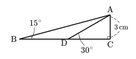
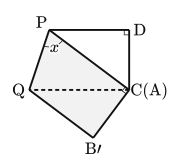

직각삼각형을 두 부분으로 나눈 측정 기록에서 높이만 남아 있다. 점 D는 선분 BC의 내부에 있고, 세 점 B,D,C는 이 순서로 한 직선 위에 있다.
측정 기록 ∘ ∠ACB=90∘ ∘ ∠ABD=15∘, ∠ADC=30∘ ∘ 높이 AC=3cm
이 기록에 맞게 밑변 BC의 길이를 복구한 값은?

①
(3+33)cm
②
(6+33)cm
③
(6+63)cm
④
(9+33)cm
⑤
(12+33)cm
정답·해설 검토
②
세 점 B,D,C가 이 순서로 한 직선 위에 있으므로 ∠ADB=180∘−30∘=150∘이다. 삼각형 ABD에서 ∠BAD=180∘−150∘−15∘=15∘이다. 따라서 ∠BAD=∠ABD이고, 이 두 각에 마주 보는 변의 길이가 같으므로 AD=BD이다. 직각삼각형 ADC에서 30∘의 삼각비를 이용하면 ADAC=21이므로 AD=6cm이다. 또 ADDC=23이므로 DC=33cm이다. 따라서 BD=AD=6cm이고 BC=BD+DC=6+33cm이므로 정답은 ②이다.
14.5점
직사각형 종이띠 ABCD에서 왼쪽 위 꼭짓점을 A, 왼쪽 아래를 B, 오른쪽 아래를 C, 오른쪽 위를 D라 하였다. P는 선분 AD의 내부, Q는 선분 BC의 내부에 있다. 첫 번째 그림은 접기 전의 종이띠이고, 두 번째 그림은 선분 PQ를 따라 왼쪽 부분을 접어 점 A를 점 C와 일치시킨 모습이다. 접은 뒤 B의 위치를 B′로 표시하였다.
접기 기록 ∘ 종이띠의 폭 AB=3cm ∘ 접은 뒤의 ∠CPQ=x, 0∘<x<90∘ ∘ tanx=3
이 접기 기록을 만족하는 접기 전 선분 AP의 길이는?

①
3cm
②
4cm
③
5cm
④
6cm
⑤
9cm
정답·해설 검토
③
접기 전후에 길이와 각의 크기가 보존되므로 PA=PC이고 ∠APQ=∠CPQ=x이다. 또 점 A를 점 C에 겹치도록 접었으므로 접는 선 PQ는 선분 AC의 수직이등분선이다. 선분 AC와 PQ의 교점을 K라 하자. 직각삼각형 APK에서 ∠APK=x이므로 ∠PAK=90∘−x이다. ∠BAP=90∘이므로 ∠BAC=90∘−(90∘−x)=x이다. 접기 전 직각삼각형 ABC에서 삼각비의 정의를 적용하면 tanx=ABBC=3BC=3이다. 따라서 BC=AD=9cm이다. AP=tcm라 하면 P가 선분 AD의 내부에 있으므로 0<t<9이고, PD=(9−t)cm이다. 접기에서 PC=PA=tcm이고 DC=AB=3cm이다. 직각삼각형 PDC에서 피타고라스 정리를 적용하면 t2=(9−t)2+32이다. 전개하여 정리하면 18t=90이므로 t=5이다. 따라서 접기 전 AP의 길이는 5cm이므로 정답은 ③이다.